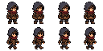
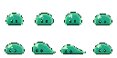
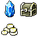
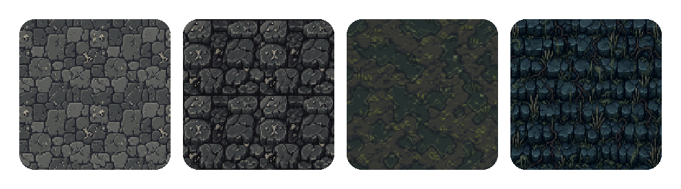
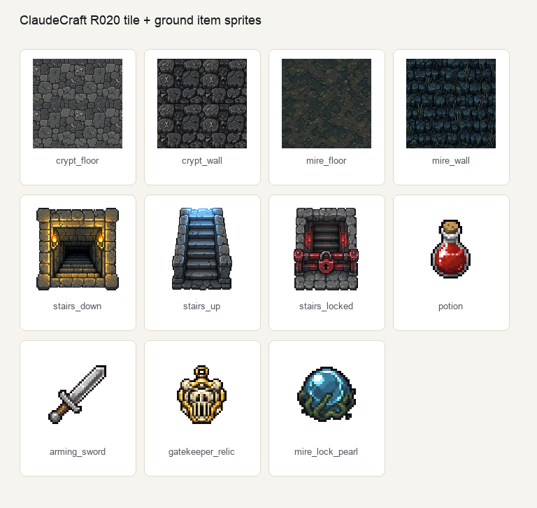
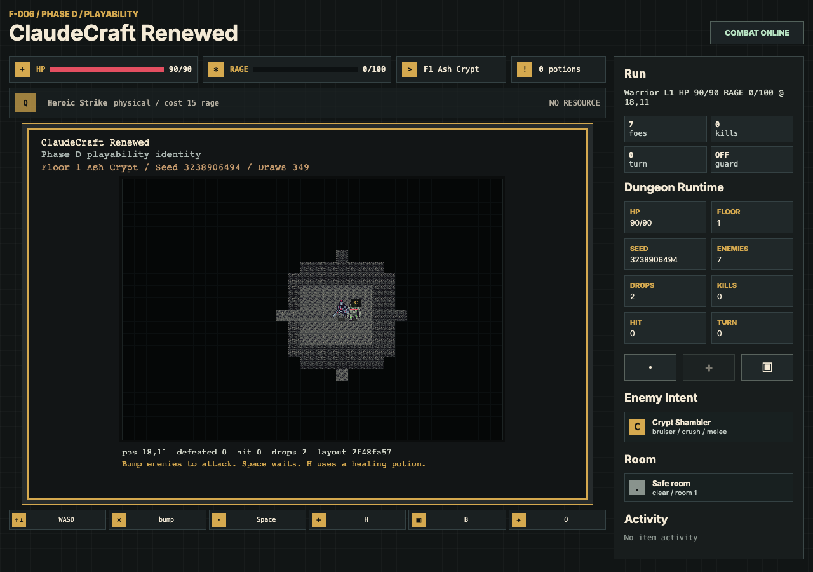
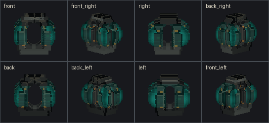
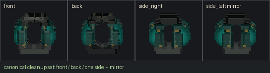
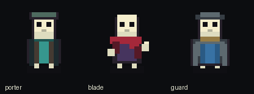

Field Constraint
아트 후보와 런타임 자산 사이의 간극
raw 이미지는 예뻐도 엔진 입장에서는 불명확하다. 어디가 투명인지, 몇 프레임인지, 어느 좌표를 샘플해야 하는지 모른다.
Codex image_gen으로 raw art를 만들고, 후처리로 게임 자산화했다. atlas, manifest, proof까지 연결했다. "그림 후보"를 엔진 자산으로 바꿨다.
초점은 예쁜 스프라이트가 아니다. FDE식 문제 해결이다. 병목을 자동화 계약으로 만들고, 실제 화면에서 검증했다.
게임 개발에서 진짜 병목은 "그림 한 장"이 아니었다. 같은 스타일로 반복 생성해야 하고, 배경을 지워야 하고, 프레임을 잘라야 하고, 엔진이 읽을 좌표와 충돌 정보를 남겨야 했다. 더 중요한 것은 실제 화면에 그려졌다는 증거였다.
raw 이미지는 예뻐도 엔진 입장에서는 불명확하다. 어디가 투명인지, 몇 프레임인지, 어느 좌표를 샘플해야 하는지 모른다.
magenta key, grid slice, atlas JSON, collision metadata를 명시해 재현 가능한 작업 단위로 만들었다.
게임 에셋 문제를 단순 디자인 요청이 아니라 자동화 파이프라인과 검증 게이트로 재정의했다.
핵심은 생성 모델을 믿는 것이 아니라, 생성 뒤의 모든 단계를 측정 가능하게 만드는 것이다. 그래서 이 파이프라인은 "그럴듯한 이미지"보다 "검증 가능한 자산 계약"을 먼저 본다.
Pipeline draft. Public page에서는 이 다이어그램을 더 압축하고 실제 atlas 이미지와 나란히 배치하면 좋다.
이 페이지의 시각자료는 모두 "무엇을 증명하는가"가 있어야 한다. AgentForge는 pipeline output, ClaudeCraft는 runtime reachability, libGDX는 review gate와 source governance를 보여준다.

player
enemy
props| Case | Proof | Status |
|---|---|---|
| AgentForge | 5 atlases, 27 frames, QC JSON, loader seed | BUILD PASS |
| ClaudeCraft | 11 visible tile/item sprites rendered | PLAYWRIGHT PASS |
| Bone Trail | review-only asset gates and voxel prepass | NOT ACCEPTED |
| OSS package | repo, tests, license, sample scope pending | DRAFT |






이 케이스는 게임 아트 자동화처럼 보이지만, 실제로는 고객/현장형 문제 해결에 가깝다. 불명확한 요구를 운영 가능한 계약으로 바꾸고, 이해관계자가 볼 수 있는 증거물을 남겼다.
"에셋이 없다"를 "raw 생성, 후처리, manifest, runtime reachability가 연결되지 않았다"로 쪼갰다.
image_gen은 raw 초안 담당. 품질과 반복성은 chroma-key, slicing, manifest, QC, proof가 담당하게 했다.
ClaudeCraft에서는 새 감사 시스템을 만들지 않고 기존 sprite loader와 proof convention을 따라 glyph path를 대체했다.
OSS repo 구조, sample scope, claim guard, skill 후보까지 정리해 개인 작업을 재사용 가능한 자산으로 바꿨다.
저는 AI가 산출물을 "만들게" 하는 데서 멈추지 않고, 그 산출물이 실제 제품 경로에 들어가기 위한 계약과 검증을 설계합니다. 이 프로젝트에서는 게임 에셋 병목을 Codex 기반 자동화 파이프라인으로 바꾸고, runtime proof까지 남겼습니다.
공개용 기술 블로그에서는 이 부분을 깊게 풀면 좋다. 포인트는 "프롬프트 잘 쓰기"가 아니라 모델이 흔들려도 파이프라인이 흔들리지 않게 만드는 계약이다.
{
"id": "tile/crypt_floor",
"source": {
"rawOrigin": "built-in image_gen",
"background": "#FF00FF"
},
"frame": { "x": 0, "y": 0, "w": 128, "h": 128 },
"layer": "base",
"collision": { "solid": false },
"proof": {
"loaded": true,
"spriteRendered": true,
"fallbackReason": null
}
}
manifest가 frame rectangle, anchor, layer, collision, proof state를 들고 있어야 한다. 그래야 renderer는 같은 규칙으로 샘플링하고, QA는 같은 규칙으로 실패를 잡는다.
이 구조는 게임 밖에서도 쓸 수 있다. 광고 소재, 아이콘 세트, UI variant처럼 "AI가 많이 만들고 사람이 승인해야 하는" 작업에 그대로 전이된다.
글은 처음부터 JSON 스키마로 들어가지 않는다. "왜 AI가 만든 이미지는 게임에 바로 못 들어갈까?"라는 익숙한 질문에서 시작하고, 그다음 기전과 자동화 설계로 들어간다.
AI는 그림을 만들고, 파이프라인은 게임 자산을 만든다
이 케이스는 과장하면 오히려 약해진다. 기술 게이트 PASS와 시각/재미 acceptance는 다르다. 공개 페이지에는 이 경계를 계속 보이게 둬야 한다.
포트폴리오에서는 "게임 에셋을 만들었다"보다 "AI output을 제품 경로에 들어갈 수 있는 contract와 proof로 바꿨다"를 전면에 둔다. 그게 FDE형 AI 엔지니어 역량에 더 가깝다.